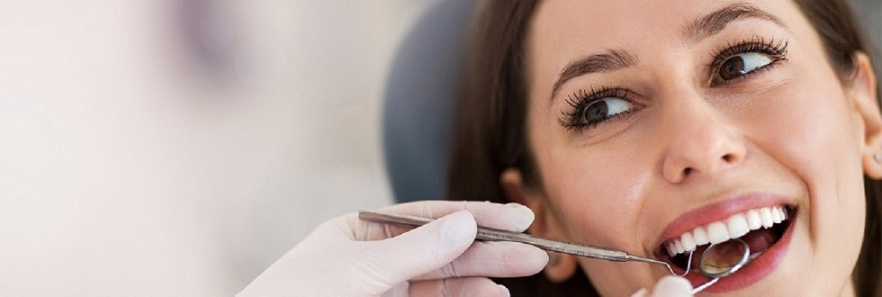
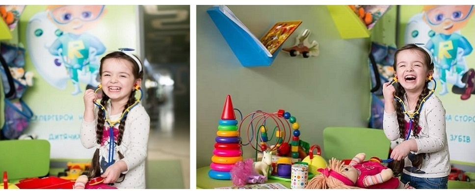

Стоматологічні послуги яким ви можете довіряти.
Наші стоматологи прагнуть надавати виняткові стоматологчні послуги з особистим дотиком, який перевершить ваші очікування. Наша динамічна команда постійно перекваліфікується і вчиться один у одного, щоб ми могли надалі надавати велику стоматологічну допомогу та залишатися попереду гри. Наш клінічний персонал підтримується командою, яка повністю присвячена догляду за пацієнтами, де вони допомагають координувати бронювання та зустрічі, а також загальні аспекти надання допомоги пацієнтам, які Відвідують нашу практику. Ми вітаємо пацієнтів різного віку, яким потрібна допомога з гігієною ротової порожнини та стоматологічною допомогою. Забезпечивши повний підхід до стоматології, наші стоматологи прагнуть підвищити довговічність вашого стоматологічного здоров'я. Якщо ви зіткнулися зі стоматологічною проблемою, наші стоматологи пропонують широкий спектр загальних стоматологічних процедур, а також відновлювальну стоматологію, косметичну стоматологію та стоматологічні призначення. Від білих пломб, зубних імплантів та Вінірів до лікування та відблювання, наша мета - покращити самопочуття та якість життя наших пацієнтів.

БІЛЬШЕ НІЖ ЛІКУВАННЯ
Філософія клініки
Лікування у нашій клініці – це не послуги на вимогу, а комфортний сервіс закладів б`юті-індустрії. Для нас важливо, аби процес зміни Вашої усмішки не приносив жодного дискомфорту. Ми цінуємо приватність й будуємо сервіс так, аби одразу після візиту наш клієнт міг продовжувати заплановане у звичайному ритмі.
Наша найбільша радість – бачити, як наші пацієнти усміхаються, несуть позитив та підкорюють нові вершини. А ми знаємо, як їм у цьому допомогти.
